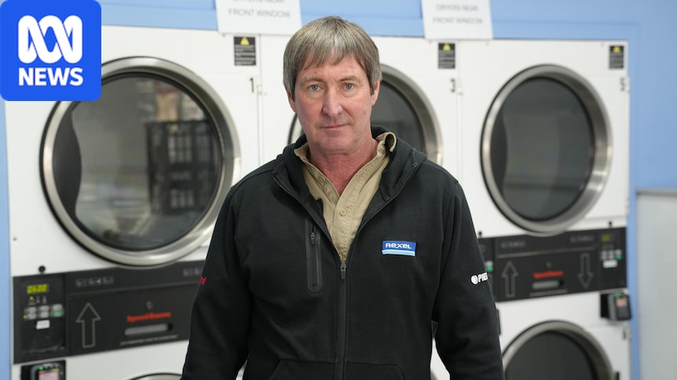
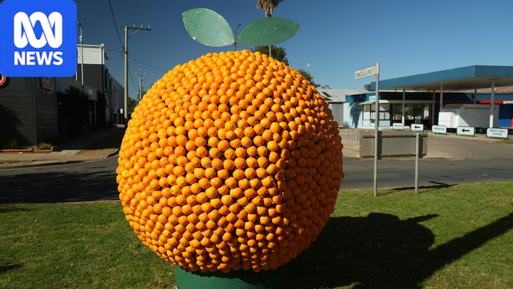
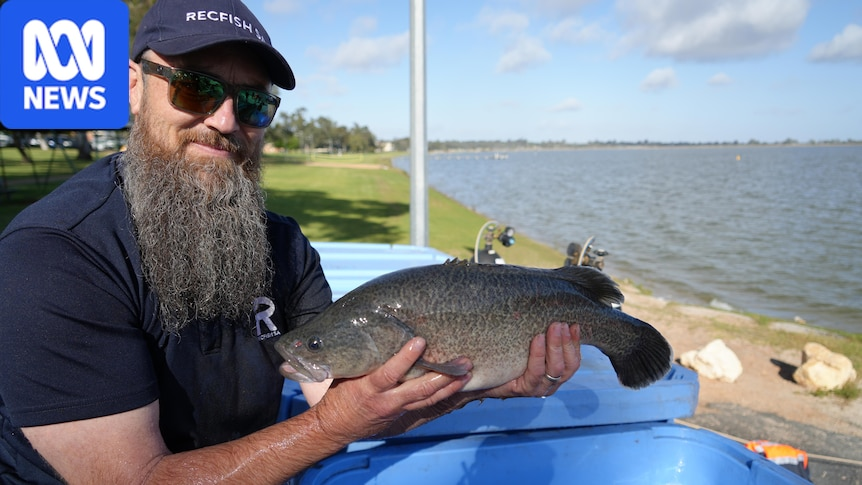

WANEYE RESEARCHAUSTRALIA EDITION
ASX MARKET BRIEF / 18 October 2026 · 10:08 AEST
Read the ASX
with context
Independent signal extraction from Australian reporting, market data and policy context.
58/ 100
MARKET PULSEMeasured confidence
Composite sentiment across today’s source set.
01
THE BRIEF
What matters now
18 October 2026
10:08 AEST
Australian unemployment climbs to a five-year high, sharply tempering RBA rate hike expectations.
The Australian dollar depreciates following the jobless shock, providing a tailwind to unhedged commodity exporters.
Sydney property auction market experiences severe stress, elevating asset quality risks for domestic lenders.
02
CROSS-SECTOR PULSE
An ASX cross-sector scan
Directional intelligence, distilled from the current reporting cycle.
01
Materials / Mining
Resources sector extends rally for a third consecutive week, with gold explorers and critical minerals producers fast-tracking production.
7 cited sourcesOPEN SIGNAL ↗
02Financials
Rising unemployment removes near-term RBA rate hike risks while auction clearance drops signal emerging mortgage distress.
5 cited sourcesOPEN SIGNAL ↗
03Technology
Tech equities rally alongside miners as soft employment data caps domestic bond yield upside.
2 cited sourcesOPEN SIGNAL ↗
04Energy
East coast gas decommissioning challenges and supply bottlenecks highlight structural tightness.
2 cited sourcesOPEN SIGNAL ↗
05Real Estate (REITs)
Residential auction markets enter sharp correction mode across Sydney, contrasted with selective rental yield tightness.
4 cited sourcesOPEN SIGNAL ↗
03
RISK REGISTER
Know the downside
Likelihood and impact are assessed independently from market sentiment.
Residential Housing Market Correction and Mortgage Stress
Underweight retail banks with high residential mortgage exposure; favour institutional lenders with diversified balance sheets.
- Impact
- High
- Likelihood
- High
- Evidence
- 4 cited sources
Labor Market Deterioration and Consumer Spending Contraction
Rotate out of cyclical discretionary retail into defensive consumer staples and healthcare.
- Impact
- High
- Likelihood
- Medium
- Evidence
- 3 cited sources
External Industrial Deflation (China Shock 2.0)
Prioritize precious metals and critical minerals with sovereign supply backing over bulk commodities.
- Impact
- Medium
- Likelihood
- High
- Evidence
- 2 cited sources
Domestic Gas Supply Crunch and Policy Intervention
Target diversified energy producers with flexible commercial contracts and offshore LNG exposure.
- Impact
- Medium
- Likelihood
- Medium
- Evidence
- 2 cited sources
04
POSITIONING
Act on the signal
Overweight Gold and Critical Minerals Producers
Depreciating AUD/USD enhances realized margins while near-term production ramp-ups provide organic volume growth.
BHP.AXNST.AXEVN.AX
Opportunitiesmedium-term
Tactical Accumulation of Quality Technology Leaders
Yield relief resulting from five-year high unemployment provides valuation tailwinds for high-margin tech platforms.
XRO.AXWTC.AX
Opportunitiesshort-term
Trim Exposure to Major Mortgage Banks
Sydney auction downturn and rising unemployment increase bad debt provision risks and dampen credit volume growth.
CBA.AXWBC.AXNAB.AXANZ.AX
Defensiveshort-term
Increase Defensive Allocation to Global Healthcare
Offshore earnings provide a structural hedge against AUD depreciation and domestic consumer deceleration.
CSL.AXCOH.AX
Defensivemedium-term
05
FORWARD VIEW
The road ahead
1—3 MONTHS
ASX 200 (^AXJO) likely to consolidate recent gains; strong resource momentum balances mounting residential property and banking headwinds.
6—12 MONTHS
Gradual equity expansion supported by eventual RBA rate cuts, though overall growth will be moderated by household leverage and global trade shifts.
06
SOURCE INTELLIGENCE
Reporting behind the view
Selected Australian source headlines referenced by the analysis.

ABC News · 2026-10-18 00:00:30 UTC
Gas company called 'rude' for not sharing decommissioning news earlier
VIEW STORY ↗ABC News · 2026-10-17 23:58:19 UTC
Assistant treasurer knew about ATO's credit card ban plans months ago
VIEW STORY ↗ABC News · 2026-10-17 23:56:00 UTC
Police investigate alleged stabbing death in Melbourne's west
VIEW STORY ↗ABC News · 2026-10-17 23:43:20 UTC
Stampede kills at least 17 people at religious festival in India
VIEW STORY ↗
ABC News · 2026-10-17 23:28:10 UTC
Sculptors see the fruit of their labour as oranges become art
VIEW STORY ↗
ABC News · 2026-10-17 23:00:33 UTC
Back where they belong, Murray Cod bring new life to SA's Lake Bonney
VIEW STORY ↗CURRENT RESEARCH
Three regions. Three connected views
Move from the executive brief through sector signals, risks, positioning and supporting reporting.
03Current regional reports
03Market editions
HourlyAnalysis cadence